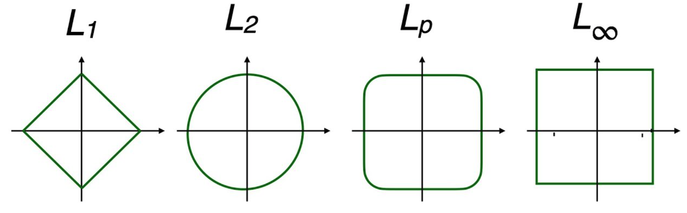

En el universo del álgebra lineal contemporánea, medir la magnitud de los objetos estructurados exige trascender la intuición geométrica clásica de la recta real. Al adentrarnos en espacios multidimensionales, las normas vectoriales emergen no solo como herramientas analíticas para definir distancias y esculpir nuevas geometrías, sino como el lenguaje fundamental para cuantificar el error y garantizar la convergencia algorítmica.
13.1 Definición
Una norma es una función que asigna un número real no negativo a un objeto \(v\) para cuantificar su magnitud. Para que una medida sea considerada matemáticamente una norma, debe cumplir con tres propiedades fundamentales: (Strang 2018 Lec. 8; Strang 2019, I.11)
- Positividad
- \( \left\| v \right\| >=0, \quad \left\| v \right\| = 0 \implies v=0\)
- Homogeneidad
- \( \left\| cv \right\| = |c| \cdot \left\| v \right\| \)
- Desigualdad del triángulo
- \( \left\| v+w \right\| \le \left\| v \right\| + \left\| w \right\| \)
13.2 Identidad de Polarización
La Identidad de Polarización es un resultado fundamental que establece un vínculo directo entre el producto interno de un espacio y la norma que este induce (Hernández 2026, Pr5 Ej4). Mientras que una norma nos dice qué tan “largo” es un vector, el producto interno nos da información sobre la relación angular entre dos vectores; esta identidad demuestra que, bajo ciertas condiciones, el producto interno puede recuperarse por completo conociendo solo las magnitudes (Hernández 2026, Pr5 Ej4).
La identidad se deriva expandiendo la norma al cuadrado de la suma (o resta) de dos vectores utilizando las propiedades del producto interno (Hernández 2026, Pr5 Ej4):
\[ \begin{aligned} & \|v + w\|^2 = \langle v+w, v+w \rangle = \|v\|^2 + \|w\|^2 + 2\langle v, w \rangle \\ & \|v - w\|^2 = \langle v-w, v-w \rangle = \|v\|^2 + \|w\|^2 - 2\langle v, w \rangle \end{aligned} \tag{13.1}\]
Al despejar el producto interno de la primer ecuación, obtenemos la primera forma de la identidad (Hernández 2026, Pr5 Ej4):
\[\langle v, w \rangle = \frac{1}{2} ( \left\| v + w \right\| ^2 - \left\| v \right\| ^2 - \left\| w \right\| ^2)\]
Si en cambio restamos ambas ecuaciones 13.1, llegamos a la forma más utilizada (Hernández 2026, Pr5 Ej4): \[\langle v, w \rangle = \frac{1}{4} \left( \left\| v + w \right\| ^2 - \left\| v - w \right\| ^2 \right) \tag{13.2}\]
13.3 Ley del Paralelogramo
Si sumamos las ecuaciones 13.1, obtenemos una regla equivalente para normas inducidas: la Ley del Paralelogramo. Geométricamente, establece que en un paralelogramo, la suma de los cuadrados de las longitudes de las diagonales es igual a la suma de los cuadrados de las longitudes de los cuatro lados (Hernández 2026, Pr5 Ej4).
\[ \|v+w\|^2 + \|v-w\|^2 = 2\|v\|^2 + 2\|w\|^2 \tag{13.3}\]
13.4 Cauchy - Schwarz
La desigualdad de Cauchy-Schwarz establece un límite superior estricto para el producto interno de dos vectores en términos del producto de sus normas (Hernández 2026, Pr3 Ej2; 2026, Pr5 Ej2; Strang 2018 Lec. 4; Strang 2018 Lec. 3; Hernández 2026, Pr5 Ej2; Armentano 2026 Clase 17).
\[\forall\ v,w \in \mathbb{R} ^n \quad |v^\top w| \le \left\| v \right\| _2 \left\| w \right\| _2 \tag{13.4}\]
Para deducir la desigualdad, consideramos la proyección ortogonal de un vector \(v\) sobre la dirección de un vector \(w\). Definimos el vector de proyección \(p\) como Strang (2018): \[p = \frac{v^\top w}{ \left\| w \right\| _2^2} w\]
El residuo o error de esta aproximación es el vector \(e = v - p\), el cual es, por construcción, perpendicular a \(w\).
Dado que la norma al cuadrado de cualquier vector debe ser mayor o igual a cero, aplicamos esta propiedad al vector de error \(e\): \[0 \le \left\| e \right\| _2^2 = \langle v - p, v - p \rangle\]
Al expandir el producto interno y sustituir la definición de \(p\), obtenemos: \[0 \le v^\top v - \frac{(v^\top w)^2}{w^\top w}\]
Reorganizando los términos, llegamos a la forma cuadrática de la desigualdad: \[(v^\top w)^2 \le (v^\top v)(w^\top w)\]
Al extraer la raíz cuadrada en ambos lados, se obtiene el enunciado clásico.La importancia de esta relación radica en los extremos de su cumplimiento:
- Igualdad (\(|v^\top w| = \left\| v \right\| _2 \left\| w \right\| _2\))
- Ocurre si y solo si los vectores son linealmente dependientes (colineales), es decir, \(v=\alpha w\) para algún escalar \(α\).
- Ortogonalidad (\( v^\top w=0\))
- Representa el límite inferior del valor absoluto, donde los vectores son perpendiculares y no comparten ninguna dirección común.
- Significado Geométrico
- Esta deducción revela que la desigualdad es en realidad una afirmación sobre la “sombra” de un vector: el producto interno (la proyección escalonada) nunca puede superar el producto de las longitudes totales de los vectores originales. El residuo \(e\) mide qué tan lejos están los vectores de ser perfectamente colineales; cuando el residuo es cero, se alcanza la igualdad perfecta (Hernández 2026, Pr3 Ej2).
Esta desigualdad garantiza que la noción geométrica del coseno de un ángulo (\(\cos \theta = \frac{v^\top w}{ \left\| v \right\| \left\| w \right\| }\)) siempre esté bien definida dentro del intervalo [−1,1], permitiendo que la geometría euclidiana sea consistente en cualquier número de dimensiones.
13.5 Desigualdad Triangular
La desigualdad de Cauchy-Schwarz es el eslabón matemático que permite validar a la norma euclidiana como una métrica legítima, pues sin ella no sería posible demostrar la desigualdad triangular. Esta propiedad es uno de los tres requisitos fundamentales para que una función sea considerada una norma: establece que el camino directo entre dos puntos es siempre menor o igual a la suma de los tramos de cualquier camino indirecto Hernández (2026).
\[ \left\| v + w \right\| _2 \le \left\| v \right\| _2 + \left\| w \right\| _2 \tag{13.5}\]
Para demostrarlo, partimos del cuadrado de la norma de la suma, expandiéndola mediante el producto interno:
\[ \left\| v + w \right\| _2^2 = \langle v + w, v + w \rangle = \left\| v \right\| _2^2 + \left\| w \right\| _2^2 + 2\langle v, w \rangle\] En este punto, la desigualdad de Cauchy-Schwarz nos permite acotar el término del producto interno: \(2\langle v, w \rangle \le 2|\langle v, w \rangle| \le 2 \left\| v \right\| _2 \left\| w \right\| _2\).
\[ \left\| v + w \right\| _2^2 \le \left\| v \right\| _2^2 + \left\| w \right\| _2^2 + 2 \left\| v \right\| _2 \left\| w \right\| _2\]
Observamos que el lado derecho es un cuadrado perfecto: \[ \left\| v + w \right\| _2^2 \le ( \left\| v \right\| _2 + \left\| w \right\| _2)^2\] Al extraer la raíz cuadrada, obtenemos la desigualdad triangular.
13.6 Normas Inducidas por Producto Interno
Una norma es inducida por un producto interno si existe una función \(\langle v, w \rangle\) tal que \( \left\| v \right\| = \sqrt{ \langle v, v \rangle }\).
Estas normas son las únicas que satisfacen la Identidad de Polarización (Hernández 2026, Pr5 Ej4; 2026, Pr5 Ej6).
Si una norma no cumple esta igualdad (como la norma \(\ell_1\) o \(\ell_\infty\)), no puede provenir de un producto interno y, por lo tanto, no define una noción de “ángulo” o “proyección ortogonal” en el sentido euclidiano habitual.
Esta propiedad es la que permite que espacios como el de las matrices con la norma de Frobenius se consideren Espacios de Hilbert. Gracias a la polarización, podemos hablar de “ángulos” u “ortogonalidad” entre matrices utilizando el producto interno de Hilbert-Schmidt.
13.7 Normas Vectoriales
Las normas más utilizadas en el análisis de datos pertenecen a la familia \(\ell_p\)
\[ \left\| v \right\| _p = \left( \sum_{i=1}^{n} |v_i|^p \right)^{1/p}\]
Dentro de esta familia, destacan cuatro casos fundamentales:
- Norma \(\ell_2\) (Euclidiana)
- Representa la distancia más corta entre dos puntos. Es la única norma de esta familia inducida por el producto punto estándar \(v^\top v\). \[||v||_2 = \sqrt{\sum_{i=1}^{n} v_i^2} = (v_1^2 + v_2^2 + \dots + v_n^2)^{ ½ }\]
- Norma \(\ell_1\) (Manhattan)
- Se define como la suma de las magnitudes absolutas. 1. \[||v||_1 = \sum_{i=1}^{n} |v_i| = |v_1| + |v_2| + \dots + |v_n|\]
- Norma \(\ell_\infty\) (Máximo)
- Resulta de llevar \(p\) al infinito, lo que hace que el componente de mayor magnitud domine sobre los demás. \[||v||_\infty = \max_{1 \le i \le n} |v_i|\]
Geometría de las Normas
La geometría de una norma se visualiza a través de su “bola unitaria”, definida como el conjunto de vectores con norma igual a 1. La forma de esta bola determina el comportamiento en problemas de optimización:
\[\mathcal{B} = \{v \in \mathbb{R}^n : \left\| v \right\| _p \le 1\}\] La forma de esta bola determina cómo la norma penaliza las componentes del vector y es crucial en problemas de optimización con restricciones. A medida que el parámetro \(p\) varía, la forma de la bola unitaria experimenta una transformación geométrica continua:
- Norma \(\ell_1\) (Diamante)
- En \(\mathbb{R}^2\), la bola es un diamante con vértices en los ejes \((\pm 1, 0)\) y \((0, \pm 1)\). Geométricamente, los vértices “puntiagudos” en los ejes explican por qué la minimización de \( \left\| v \right\| _1\) bajo restricciones lineales tiende a encontrar soluciones dispersas (sparse), ya que es más probable que la restricción toque primero un vértice.
- Norma \(\ell_2\) (Círculo/Esfera)
- Representa el caso clásico donde la bola es un círculo perfecto. No favorece ninguna dirección en particular, lo que resulta en soluciones donde muchas componentes son pequeñas pero no nulas.
- Norma \(\ell_\infty\) (Cuadrado/Cubo)
- La bola unitaria es un cuadrado con lados paralelos a los ejes, definidos por las rectas \(x = \pm 1\) y \(y = \pm 1\). En este caso, el tamaño del vector solo depende de su componente más grande.
- Familia \(\ell_p\) Genérica
- Para \(1 < p < 2\), la bola es una forma intermedia entre el diamante y el círculo. Para \(p > 2\), la bola se “infla” hacia el cuadrado (squircle). Una propiedad crítica es que para cualquier \(p \ge 1\), la bola unitaria es un conjunto convexo, lo que garantiza que cualquier mínimo local en un problema de optimización sea también un mínimo global. Las normas verdaderas siempre definen conjuntos convexos. Cuando \(p < 1\), la medida pierde la convexidad y deja de ser una norma válida.

Fuente: Dr Will Wood
El Caso Especial de \(\ell_0\)
Aunque se le llama norma \(\ell_0\) en la práctica, formalmente no es una norma por incumplir la homogeneidad escalar. Representa la cantidad de elementos distintos de cero en el vector. \[||v||_0 = \#\{i : v_i \neq 0\}\]
Tiene una geometría degenerada. Su “bola unitaria” no abarca un área, sino que consiste únicamente en los ejes coordenados (donde solo una componente es no nula). Al no ser un conjunto convexo (y no cumplir con la homogeneidad escalar), \(\ell_0\) no es una norma verdadera. 2.
Normas \(S\)
La norma \(S\), frecuentemente denominada norma de energía, permite adaptar la medición de magnitud a la estructura de un problema específico mediante una matriz simétrica definida positiva \(S\).
Para un vector \(v\), la norma \(S\) se define como: \[ \left\| v \right\| _S = \sqrt{v^\top S v}\]
Para que esta expresión satisfaga formalmente los axiomas de una norma, especialmente la positividad (\( \left\| v \right\| > 0\) para \(v \neq 0\)), la matriz \(S\) debe ser estrictamente definida positiva. Si \(S\) es la matriz identidad, la norma \(S\) colapsa a la norma euclidiana estándar \(\ell_2\).
Interpretación Geométrica
A diferencia de la norma \(\ell_2\), cuya bola unitaria es una esfera perfecta, la bola unitaria de la norma \(S\) (definida por el conjunto \(\{v : v^\top S v \le 1\}\)) describe un elipsoide en \(\mathbb{R}^n\).
Las direcciones de los ejes de este elipsoide coinciden con los vectores propios \(q_i\) de la matriz \(S\). La extensión del elipsoide en cada dirección es inversamente proporcional a la raíz cuadrada del valor propio correspondiente, siendo la longitud del \(i\)-ésimo semieje igual a \(1/\sqrt{\lambda_i}\). 3
13.8 Normas en Espacios de Funciones
La generalización del concepto de norma permite medir la magnitud no solo de vectores discretos, sino también de objetos continuos como las funciones. Esta transición es fundamental para el análisis funcional y el procesamiento de señales (Strang 2018 Lec. 8).
Norma \(L^p\) Funcional
En un espacio de funciones definidas sobre un intervalo \([a, b]\), la norma \(L^p\) sustituye la sumatoria por una integral de la magnitud de la función elevada a la potencia \(p\) (Hernández 2026, Pr1 Ej11):
\[ \left\| f \right\| _p = \left( \int_a^b |f(x)|^p dx \right)^{1/p}\]
La Norma \(L^2\) y la Energía
La norma más utilizada es la norma \(L^2\), también conocida como la norma de energía de la función. Al igual que en el caso vectorial, es la única de la familia \(L^p\) que es inducida por un producto interno (Strang 2018 Lec. 8; Armentano 2026 Clase 15):
\[\langle f, g \rangle = \int_a^b f(x)g(x) \, dx \implies \left\| f \right\| _2 = \sqrt{\int_a^b |f(x)|^2 \, dx}\]
Esta estructura convierte al conjunto de funciones de cuadrado integrable en un Espacio de Hilbert, permitiendo extender conceptos geométricos como la ortogonalidad. Por ejemplo, las funciones seno y coseno son ortogonales bajo este producto interno, lo que constituye la base de las series de Fourier.
Su minimización es el motor del compressed sensing, pues tiende a producir soluciones ralas (con componentes nulos)↩︎
Si aplicamos \(\alpha\neq0\) a un vector \(v\) y calculamos su norma \(\ell_0\), las posiciones nulas seguiran siendo nulas y las no nulas permaneceran no nulas. La cantidad de elementos distintos de cero es identica a la del vector original: \( \left\| \alpha x \right\| _0= \left\| x \right\| _0\).↩︎
Esta norma es fundamental en algoritmos de optimización y aprendizaje profundo, donde se utiliza para definir funciones de pérdida que penalizan de manera distinta diferentes direcciones del espacio de parámetros.↩︎